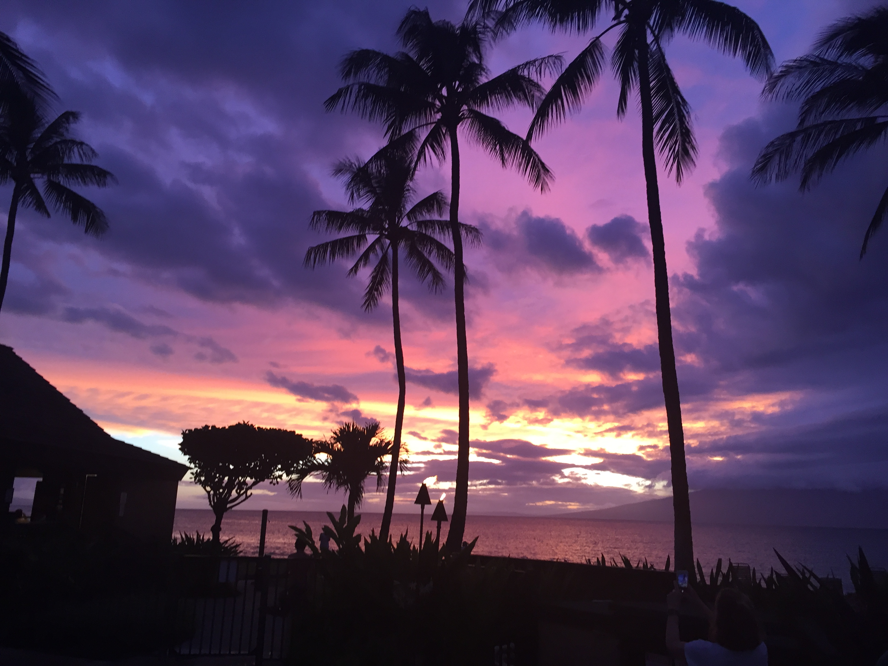
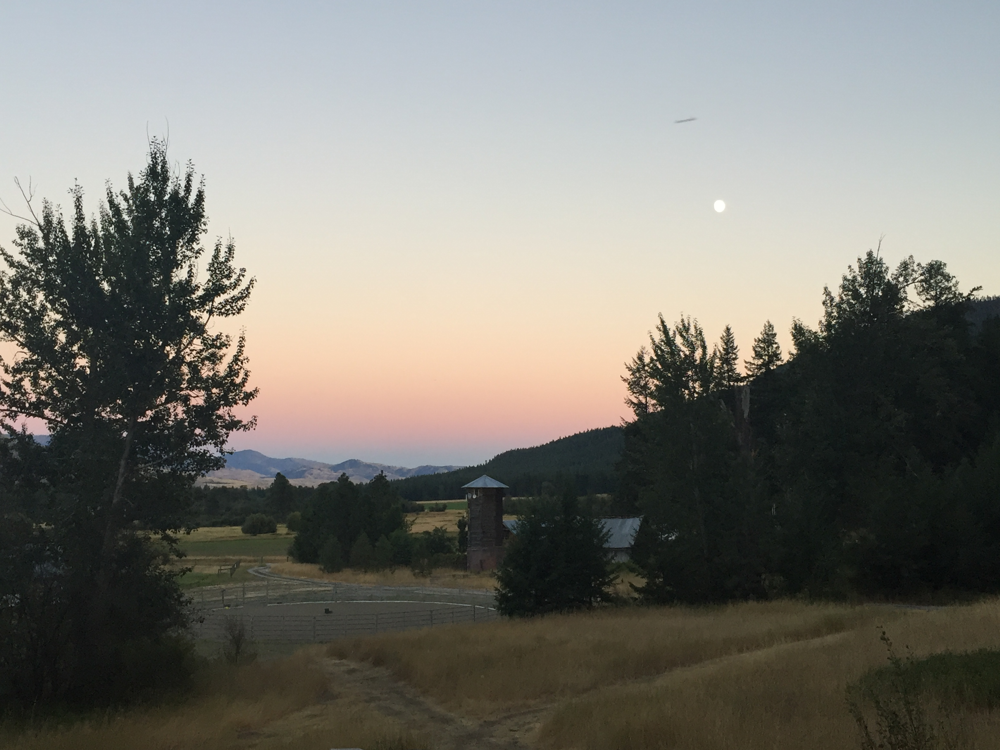

This page tells you stories of adventures at Maui Hawaii and at Mazama Washington
My family went on a trip to Maui in Hawaii. This was the second time that I had been to Hawaii, it was for one of my cousin’s graduation gift. We had a lot of fun ziplining, snorkeling, hiking and much more. This time around we spent a lot more time with family. I tried some new fruits likes papaya, dragon fruit, apple-bananas, guava and fresh coconut. We got a coconut after coming back from the seven sacred pool, but it was still in the husk. We broke a knife trying to get the husk off, I then was able to apply some knowledge from the internet to open the coconut. At the place we were staying as well had a lot of cats roaming around, they were a lot of fun to try to play with. This was a very fun adventure that I had with my family and it remains a good memory.
My family has a place over in Mazama and we go there often. I have been going there since I was a baby and I have made tons of memories over there with my friends and family. When I am over at my cabin, I ride horses, hike, read and sleep. It is very quiet and peaceful over there so the sleep quality is very good. I sometimes ride the horses down at my aunt’s barn and we go on a lot of walks to the rivers with the dog. It is a nice place to be go to when you just want to leave the house. I have brought some of my friends over and we hangout, it is a good place just to chill and talk with people.
